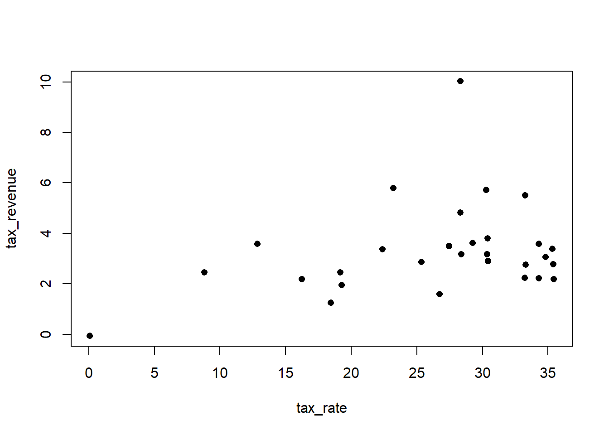

Code
library(rethinking)
library(dagitty)
library(tidyverse)library(rethinking)
library(dagitty)
library(tidyverse)Introduce \(R^2\):
\[R^2 = \frac{\text{var(outcome) - var(residuals)}}{\text{var(outcome)}} = 1 - \frac{\text{var(residuals)}}{\text{var(outcome)}}\] The \(R^2\) will also increase the more predictors we add, even when the variables added are just random noise.
Let’s look at a dataset of average brain volumes and body mass
sppnames <- c('afarensis', 'africanus', 'habilis', 'boisei', 'rudolfensis', 'ergaster', 'sapiens')
brainvolcc <- c(438, 452, 612, 521, 752, 871, 1350)
masskg <- c(37, 35.5, 34.5, 41.5, 55.5, 61, 53.5)
d <- data.frame(species=sppnames, brain=brainvolcc, mass=masskg)Let’s rescale and center body mass. We will just rescale brain to be between 0 and 1 since we want to keep the zero reference point. We’ll also build a simple linear model.
d$mass_std <- standardize(d$mass)
d$brain_std <- d$brain / max(d$brain)The simple linear model as absurd priors, but that is part of the lesson:
m7.1 <- quap(alist(
brain_std ~ dnorm(mu, exp(log_sigma)),
mu <- a + b*mass_std,
a ~ dnorm(0.5, 1),
b ~ dnorm(0, 10),
log_sigma ~ dnorm(0,1) # Bakes out the same as log normal
), data=d)Just as an aside, you can extract samples from a simple OLS model, since OLS is really just an approximate bayes algorithm with flat priors. You won’t get a sigma posterior though
m7.1_OLS <- lm(brain_std ~ mass_std, data=d)
post <- extract.samples(m7.1_OLS)Let’s calculate \(R^2\) for this model. Here we actually want the average squared deviation since we are in a Bayesian context. We don’t want the \(n-1\) correction term. This is implemented in Richie’s var2 function
var2function (x, na.rm = TRUE)
{
mean(x^2) - mean(x)^2
}
<bytecode: 0x00000199eeb4d978>
<environment: namespace:rethinking>Alright, let’s compute:
set.seed(12)
R2_is_bad <- function(quap_fit){
s <- sim(quap_fit)
r <- colMeans(s) - d$brain_std
resid_var <- var2(r)
outcome_var <- var2(d$brain_std)
1 - resid_var/outcome_var
}
R2_is_bad(m7.1)[1] 0.4774589Alright, let’s go crazy with polynomials:
m7.2 <- quap(alist(
brain_std ~ dnorm(mu, exp(log_sigma)),
mu <- a + b[1]*mass_std + b[2]*mass_std^2,
a ~ dnorm(0.5, 1),
b ~ dnorm(0, 10),
log_sigma ~ dnorm(0,1) # Bakes out the same as log normal
), data=d, start=list(b=rep(0,2)))
m7.3 <- quap(alist(
brain_std ~ dnorm(mu, exp(log_sigma)),
mu <- a + b[1]*mass_std + b[2]*mass_std^2 + b[3]*mass_std^3,
a ~ dnorm(0.5, 1),
b ~ dnorm(0, 10),
log_sigma ~ dnorm(0,1) # Bakes out the same as log normal
), data=d, start=list(b=rep(0,3)))
m7.4 <- quap(alist(
brain_std ~ dnorm(mu, exp(log_sigma)),
mu <- a + b[1]*mass_std + b[2]*mass_std^2 + b[3]*mass_std^3 + b[4]*mass_std^4,
a ~ dnorm(0.5, 1),
b ~ dnorm(0, 10),
log_sigma ~ dnorm(0,1) # Bakes out the same as log normal
), data=d, start=list(b=rep(0,4)))
m7.5 <- quap(alist(
brain_std ~ dnorm(mu, exp(log_sigma)),
mu <- a + b[1]*mass_std + b[2]*mass_std^2 + b[3]*mass_std^3 + b[4]*mass_std^4 + b[5]*mass_std^5,
a ~ dnorm(0.5, 1),
b ~ dnorm(0, 10),
log_sigma ~ dnorm(0,1) # Bakes out the same as log normal
), data=d, start=list(b=rep(0,5)))
m7.6 <- quap(alist(
brain_std ~ dnorm(mu, 0.001),
mu <- a + b[1]*mass_std + b[2]*mass_std^2 + b[3]*mass_std^3 + b[4]*mass_std^4 + b[5]*mass_std^5 + b[5]*mass_std^6,
a ~ dnorm(0.5, 1),
b ~ dnorm(0, 10)
), data=d, start=list(b=rep(0,5)))The last model m7.6 has its variance replace with 0.001. I’m guessing this is because if we didn’t hard code it we would have 8 parameters for 7 points of data.
Let’s go ahead and plot these:
plot_func <- function(quap_fit, name){
post <- extract.samples(quap_fit)
mass_seq <- seq(min(d$mass_std), max(d$mass_std), length.out=100)
l <- link(quap_fit, data=list(mass_std=mass_seq))
mu <- colMeans(l)
ci <- apply(l, 2, PI)
plot(brain_std ~ mass_std, data=d, main=paste0('Model ', name, 'R^2=', round(R2_is_bad(quap_fit), 2)), ylim=c(range(ci, mu, d$brain_std)))
lines(mass_seq, mu)
shade(ci, mass_seq)
}
par(mfrow=c(2,3))
for(i in 1:6) paste0('plot_func(m7.', i,',',i, ')') |> parse(text=_) |> eval()Notice that the model predicts negative brain size for m7.6, not great. Model m7.1 could be said to be underfit. This means that it is not sensitive to changes in the sample. If we removed a point, it would probably look relatively the same. Alternatively, model m7.4 is overfit. If we remove a point, the polynomial mean line would look wildly different.
Bias-variance: bias (underfitting) and variance (overfitting).
We need to:
To define a target, there are two main dimensions to worry about:
Joint probability is the measure we want. It’s the unique measure that correctly counts up the relative number of ways each event could happen. The true model will also have the highest joint probability.
Information: The reduction in uncertainty when we learn an outcome.
What is a good measure of uncertainty:
The function that satisfies these desiderata has one form and is called information entropy. For \(n\) possible events, with each event \(i\) occurring with probability \(p_i\), then the entropy is:
\[H(p)=-E_p[\log(p_i)]=-\sum^n_{i=1}p_i\log(p_i)\]
We can use entropy to build measures of accuracy. Also, when \(p_i=0\), we can use L’Hopitals rule to show \(p_i\log(p_i)=0\). Notice, also that maximizing entropy is the same as decreasing uncertainty.
Divergence: The additional uncertainty induced by using probabilites from one distribution to describe anoter distribution.
The KL divergence is defined as:
\[D_{\text{KL}}(p,q)=\sum_i p_i \log(p_i/q_i)\]
In plain english: the average difference in log probability between the target \(p\) and model \(q\). This is also just the difference between two entropies: the entropy of the target distribution \(p\) and the cross entropy arising from using \(q\) to predict \(p\). We can use this metric to predict different models.
One thing to callout here is the definition of cross entropy:
\[H(p,q)=-E\log(p_i)=-\sum^n_{i=1}p_i\log(q_i)\] This is really just the expected value of \(\log(q)\) with respect to \(p\). This also shows why KL Divergence is not symmetric - you are changing the reference distribution for the cross entropy.
Notice that we almost never have \(p\), the true distribution. But, we have some estimates \(q\) and \(r\), we can compare these two since \(p\) will drop out in the comparison. It is convention to just take the sum of the log-probabilities. There is a convenient function to do just this:
set.seed(1)
lppd(m7.1,n=1e4)[1] 0.6098715 0.6483484 0.5496111 0.6234979 0.4648178 0.4347639 -0.8444734If you summed the above, you’d get the log-probability score. Larger values are better since they indicate larger average accuracy. It is common to see this called deviance, but multiplied by -2. the -2 is for historical reasons and is really done so the sample distribution falls more in line with a Chi-squared distribution.
The lppd function shown above is called the log-pointwise-predictive-density as is defined as:
\[\text{lppd}(y,\Theta)=\sum_i \log\frac{1}{S}\sum_s p(y_i|\Theta_s)\]
Where \(S\) is the number of samples and \(\Theta_s\) is the s-th sampled parameter vector from the posterior.
Here is the code to do just that:
set.seed(1)
logprob <- sim(m7.1, ll=T, n=1e4) # Same function used in ch4, will return
# a matrix of log-probability values of ll=T
ns <- nrow(logprob)
n <- ncol(logprob)
f <- \(x) log_sum_exp(logprob[,x]) - log(ns)
vapply(1:n, f, numeric(1))[1] 0.6098715 0.6483484 0.5496111 0.6234979 0.4648178 0.4347639 -0.8444734We are still going to suffer from the same issue that the \(R^2\) had: the scores will get better as the model becomes more complex.
set.seed(1)
vapply(1:6, \(x){
paste0('lppd(m7.',x,') |> sum()') |> parse(text=_) |> eval()
}, numeric(1))[1] 2.490403 2.566165 3.741488 5.333750 14.095009 -606.485083logprob <- sim(m7.6, ll=T, n=1e4) # Same function used in ch4, will return
# a matrix of log-probability values of ll=T
ns <- nrow(logprob)
n <- ncol(logprob)
f <- \(x) log_sum_exp(logprob[,x]) - log(ns)
vapply(1:n, f, numeric(1))[1] -136.261379 -420.150617 -58.781680 3.429006 5.640072 5.642777
[7] 5.609147precis(m7.6, depth=2) mean sd 5.5% 94.5%
b[1] 1.4127005 0.003221105 1.4075525 1.4178484
b[2] 0.1664465 0.006733439 0.1556852 0.1772079
b[3] -2.0448680 0.005812292 -2.0541572 -2.0355788
b[4] -1.1757658 0.008049811 -1.1886310 -1.1629007
b[5] 0.5812014 0.002336917 0.5774666 0.5849363
a 0.8075114 0.001780075 0.8046665 0.8103563Let’s simulate some training and testing datasets and see how deviance changes (both in and out of sample) with the number of free parameters:
# To save time I'm only going to do 100 replications
### Takes too long to run, but you get the gist
N <- 20
kseq <- 1:5
dev <- vapply(kseq, \(x) {
r <- replicate(5, sim_train_test(N,x))
c(mean(r[1,]), mean(r[2,]), sd(r[1,]), sd(r[2,]))
}, numeric(4))
plot(1:5, dev[1,], ylim=c(min(dev[1:2,])-5, max(dev[1:2,])+10), xlim=c(1,5.1))
points(1:5, dev[2,], col='darkblue', pch=16)Time to start using PSIS-LOOCV: pareto smoothed importance sampling for leave-one-out cross-validation. Let’s say that we have a model, and we choose to fit it \(N\) times, leaving out \(y_i\) everytime we fit. Then the out-of-sample log-pointwise predictive density is given by
\[\text{lppd}_{\text{CV}} = \sum_{i=1}^N \frac{1}{S} \sum^S_{i=1} \log P(y_i|\theta_{-i,s})\]
where \(\theta_{-i,s}\) is the \(s\)-th sample from the markov chain, approximating the posterior for when we left \(y_i\) out of inference.
This is cool, but it is expensive. A better approach is to weight each observation by its importance to the posterior and using that weight in conjunction with the posterior from the entire dataset to get an estimate of \(\text{lppd}_{\text{CV}}\). For the weights we will use:
\[r(\theta_s)=\frac{1}{p(y_i|\theta_s)}\]
This then allows us to get:
\[\text{lppd}_{\text{IS}} = \sum_{i=1}^N\log\frac{\sum^S_{s=1} r(\theta_s) p(y_i|s)}{\sum^S_{s=1} r(\theta_s)}\]
Where we divide by the importance ratios do get a normalized estimate. The Pareto piece comes in when we need to smooth out \(r(\theta_s)\). For influential observations, the rations will have very heavy tails. The Parteo distribution helps us smooth this out, as well as giving us a nice diagnostic parameter \(k\) from the Pareto distribution fit to the importance rations for each point. If \(k < 0.7\) we have a good estimate and don’t need to worry about our approximation (as much).
Let’s go back to information criteria. Bet you didn’t notice that when we looked at the difference between train and test deviance’s by # of params., the distance between train and test was twice the number of parameters? This is actually one of the cool things that falls out of the theory. The OLS, the expected overfitting penalty is about twice the number of parameters.
We can use this fact to get the AIC (Akaike Information Criteria):
\[\text{AIC} = D_{\text{Train}} + 2p = -2\text{lppd} + 2p\]
where \(p\) is the number of free parameters. AIC is mostly defunct now as it relies on some strong assumptions:
The DIC is a more general metric that is okay with informative priors, but still requires that \(N \gg k\).
We’ll focus on WAIC which does not make any assumptions about the shape of the posterior and converges to the leave-one-out approximation in large samples. It is really just the log-posterior-predictive-density we calculated earlier but with a penalty term proportional to the variance in the posterior predictions. It’s goal is to approximate the out-of-sample KL divergence:
\[\text{WAIC}(y,\Theta)=-2 (\text{lppd} - \sum_i\text{var}_{\theta}\log p(y_i|\theta))\]
The penalty term (the sum) is sometimes called the “effective number of parameters” \(p_{\text{WAIC}}\). Richie will call this the “overfitting penalty”.
Let’s walk through a WAIC calculation:
set.seed(123)
data(cars)
m <- quap(alist(
dist ~ dnorm(mu, sigma),
mu <- a + b*speed,
a ~ dnorm(0,100),
b ~ dnorm(0,10),
sigma ~ dexp(1)
), data=cars)
post <- extract.samples(m,n=1e3)
n_samples <- nrow(post)
logprob <- vapply(1:n_samples, \(s){
mu <- post$a[s] + post$b[s]*cars$speed
dnorm(cars$dist, mu, post$sigma[s], log=T)
}, numeric(nrow(cars)))
lppd <- vapply(1:nrow(cars), \(x) log_sum_exp(logprob[x,]) - log(n_samples), numeric(1))
# Penalty term
pWAIC <- vapply(1:nrow(cars), \(x) var(logprob[x,]), numeric(1))
-2*(sum(lppd) - sum(pWAIC))[1] 423.2869WAIC(m) # Get pointwise by setting `pointwise=T` WAIC lppd penalty std_err
1 423.0496 -206.8991 4.62574 17.58396waic_vec <- -2*(lppd - pWAIC)
# std. error on WAIC
sqrt(nrow(cars)*var(waic_vec))[1] 17.88919Notice that we can approximate the standard error by assuming that each WAIC in the waic_vec came from a the same distribution, so the variance of the sum of the vector (essentially the mean times a constant, invoking the central limit theorem) is the variance of the distribution they came from times the number of samples.
Let’s go back to chapter 6 where we built different causal models for inferring the effect of fungus on plant growth. Model m6.6 just has the intercept, m6.7 included both treatment and fungus, and m6.8 is the model that includes treatment, but omits fungus (the correct one for the causal interpretation).
set.seed(71)
N <- 100
h0 <- rnorm(N,10,2)
treatment <- rep(0:1, each=N/2)
fungus <- rbinom(N, size=1, prob=0.5 - treatment*0.4)
h1 <- h0 + rnorm(N, 5 - 3*fungus)
d <- data.frame(h0,h1,treatment, fungus)
m6.6 <- quap(alist(
h1 ~ dnorm(mu, sigma),
mu <- h0*p,
p ~ dlnorm(0,0.25),
sigma ~ dexp(1)
), data=d)
m6.7 <- quap(alist(
h1 ~ dnorm(mu, sigma),
mu <- h0*p,
p <- a + bt*treatment + bf*fungus,
a ~ dlnorm(0,0.2),
bt ~ dnorm(0,0.5),
bf ~ dnorm(0,0.5),
sigma ~ dexp(1)
), data=d)
m6.8 <- quap(alist(
h1 ~ dnorm(mu, sigma),
mu <- h0*p,
p <- a + bt*treatment,
a ~ dlnorm(0,0.2),
bt ~ dnorm(0,0.5),
sigma ~ dexp(1)
), data=d)Let’s check the WAIC to see which is better:
compare(m6.6, m6.7, m6.8, func=WAIC) # Can also do func=PSIS WAIC SE dWAIC dSE pWAIC weight
m6.7 361.8105 14.17580 0.00000 NA 3.785343 1.000000e+00
m6.8 403.0649 11.23902 41.25445 10.42699 2.791505 1.100805e-09
m6.6 406.2842 11.76437 44.47372 12.20547 1.752989 2.201174e-10First column is the WAIC (smaller is better). Notice how the variable with the fungus variable performed best. The dWAIC column is the distance from the model in question to the top (best) model. The dSE column is the standard error of the difference between models. Let’s do a quick calculation walkthrough:
waic_m6.7 <- WAIC(m6.7, pointwise=T)$WAIC
waic_m6.8 <- WAIC(m6.8, pointwise=T)$WAIC
n <- length(waic_m6.7)
diff_m <- waic_m6.7 - waic_m6.8
sqrt(n*var(diff_m))[1] 10.28199Give the standard error, we know that the expected difference is quite far from zero (\(\mu \pm 2.6SE\) assuming CLT kicked in).
plot(compare(m6.6, m6.7, m6.8))The filled in points are the in-sample deviance (just the \(\text{lppd}\) without the penalty term). The circle points (on the same line) are the WAIC values. The triangle point and line segments show the difference between the best model’s WAIC.
Let’s hone in on m6.6 and m6.8. We can see their dSE slot in the returned S4 object.
compare(m6.6, m6.7, m6.8)@dSE m6.6 m6.7 m6.8
m6.6 NA 12.17378 4.936713
m6.7 12.173782 NA 10.384196
m6.8 4.936713 10.38420 NAYou notice that the standard error of the difference is bigger than the difference itself. Therefore we can not reliably say which model is better than the other.
You’ll notice that weight was in the comparison table. That is primarily used for model averaging. It is calculated as such:
\[w_i = \frac{\exp(-0.5\Delta_i)}{\sum_j\exp(-0.5\Delta_i)}\]
where \(\Delta_i\) is the difference between model \(i\)’s WAIC value and the best WAIC in the set.
Let’s now go back to chapter 5 and refit the divorce models:
data(WaffleDivorce)
d <- WaffleDivorce
d$D <- standardize(d$Divorce)
d$M <- standardize(d$Marriage)
d$A <- standardize(d$MedianAgeMarriage)
m5.1 <- quap(alist(
D ~ dnorm(mu, sigma),
mu <- a + bA * A,
a ~ dnorm(0,0.2),
bA ~ dnorm(0,0.5),
sigma ~ dexp(1)
), data=d)
m5.2 <- quap(alist(
D ~ dnorm(mu, sigma),
mu <- a + bM * M,
a ~ dnorm(0,0.2),
bM ~ dnorm(0,0.5),
sigma ~ dexp(1)
), data=d)
m5.3 <- quap(alist(
D ~ dnorm(mu, sigma),
mu <- a + bM * M + bA * A,
a ~ dnorm(0,0.2),
bM ~ dnorm(0,0.5),
bA ~ dnorm(0,0.5),
sigma ~ dexp(1)
), data=d)Just a reminder that Marriage rate \(M\) has little association with divorce rate \(D\), once Age \(A\) is included into the model m5.3.
Now let’s compare:
compare(m5.1, m5.2, m5.3, func=PSIS)Some Pareto k values are high (>0.5). Set pointwise=TRUE to inspect individual points.
Some Pareto k values are high (>0.5). Set pointwise=TRUE to inspect individual points.Some Pareto k values are very high (>1). Set pointwise=TRUE to inspect individual points. PSIS SE dPSIS dSE pPSIS weight
m5.1 126.9733 14.41694 0.00000 NA 4.372411 0.859601814
m5.3 130.6141 15.52562 3.64085 1.558914 6.486203 0.139218472
m5.2 140.1557 10.86663 13.18239 10.458060 3.490896 0.001179714Since \(M\) has very little effect on \(D\), removing it from the model and using only \(A\) (m5.1) performs very well. Adding \(M\) back in m5.3 dilutes the effects, but is not significantly different.
Also, notice that we got some warnings for the PSIS of the fits. While there is no warning from WAIC, we would still see some outlier measure by looking at the penalty.
PSIS_m5.3 <- PSIS(m5.3, pointwise=T)Some Pareto k values are high (>0.5). Set pointwise=TRUE to inspect individual points.WAIC_m5.3 <- WAIC(m5.3, pointwise=T)
plot(PSIS_m5.3$k, WAIC_m5.3$penalty, xlab='PSIS Parteo K', ylab='WAIC Penalty', col=rangi2, pch=16)
abline(v=0.5, lwd=2, lty=2)Idaho is the top-right most point and Maine is the second-most outlier. The reason for Idaho is that is has a very low divorce rate for its age at marriage. Recall that the total number of parameters model m5.3 is 4, but if we run sum all the penalty terms above, we would get something close to 6.
An alternative here is the use robust regression. We will swap out the Gaussian distribution we have been using thus far for the likelihood with a t-distribution. The t-distribution has parameter \(\nu\) which controls the thickness of the tails. We’ll use \(\nu=2\) for thicker tails be keeping it so that the variance and mean of the student-t is still defined (variance only defined for \(\nu > 2\)).
m5.3t <- quap(alist(
D ~ dstudent(2, mu, sigma),
mu <- a + bM*M + bA*A,
a ~ dnorm(0,0.2),
bM ~ dnorm(0,0.5),
bA ~ dnorm(0,0.5),
sigma ~ dexp(1)
), data=d)
plot(coeftab(m5.3, m5.3t), pars=c('bM', 'bA'))You’ll notice that \(\beta_A\) is farther from zero. This is because when Idaho was influential in the model it lowered the coefficient since it had a low divorce rate and a low median age at marriage. Let’s also check the \(\hat{k}\) now:
PSIS_m5.3 <- PSIS(m5.3t, pointwise=T)
WAIC_m5.3 <- WAIC(m5.3t, pointwise=T)
plot(PSIS_m5.3$k, WAIC_m5.3$penalty, xlab='PSIS Parteo K', ylab='WAIC Penalty', col=rangi2, pch=16)
abline(v=0.5, lwd=2, lty=2)Here is the definition for the AIC:
\[\text{AIC} = D_{\text{Train}} + 2p = -2\text{lppd} + 2p\]
where \(p\) is the number of free parameters. AIC is relies on the following assumptions:
Here is the following definition for WAIC:
\[\text{WAIC}(y,\Theta)=-2 (\text{lppd} - \sum_i\text{var}_{\theta}\log p(y_i|\theta))\] Clearly, WAIC is more general than the AIC. It is able to take the entire posterior into account and does not need to make any assumptions about posterior shape. That said, if the assumptions of the above are met, we should converge to the same value for WAIC and AIC.
For information criteria, we need to use the same observations between models that we are evaluating. If we decide to reduce the number of observations for model \(M_1\) when comparing to model \(M_2\), then \(M_1\) will be starting at an advantage. Recall, we want a lower deviance or WAIC score. Here is a small example below:
N <- 100
h0 <- rnorm(N,10,2)
treatment <- rep(0:1, each=N/2)
fungus <- rbinom(N, size=1, prob=0.5 - treatment*0.4)
h1 <- h0 + rnorm(N, 5 - 3*fungus)
d <- data.frame(h0,h1,treatment, fungus)
m6.6_high_n <- quap(alist(
h1 ~ dnorm(mu, sigma),
mu <- h0*p,
p ~ dlnorm(0,0.25),
sigma ~ dexp(1)
), data=d)
d <- d[sample(nrow(d), 10),]
m6.6_low_n <- quap(alist(
h1 ~ dnorm(mu, sigma),
mu <- h0*p,
p ~ dlnorm(0,0.25),
sigma ~ dexp(1)
), data=d)
rbind(WAIC(m6.6_high_n), WAIC(m6.6_low_n)) |> as.data.frame() |> mutate(model=c('high N', 'low N')) |>
relocate(model) model WAIC lppd penalty std_err
1 high N 412.11177 -204.05798 1.997902 14.053061
2 low N 43.74516 -18.23555 3.637031 6.371206Even though it is the same model, with the same DGP, the lower N model fairs better since we are summing over less terms.
In the same vein, we cannot compare two models that are evaluated with different datasets. This is because we want to compare models, not data. If we use two different datasets then we no longer have apples to apples. We won’t be able to tell if it is the \(y_i\) in \(p(y_i)\) or the actual model that is improving or hurting the deviance.
There was a poorly drawn curve in the WSJ fitting some data on tax rates. Let’s correctly draw some curves predicting tax revenue from tax rate.
data(Laffer)
d <- Laffer
plot(tax_revenue ~ tax_rate, data=d, pch=16)
Let’s try four models. An intercept only, a linear, a quadratic, and a log.
m_h.1.1 <- quap(alist(
tax_revenue ~ dnorm(mu, sig),
mu <- a,
a ~ dnorm(0,1),
sig ~ dexp(1)
), data=d)
m_h.1.2 <- quap(alist(
tax_revenue ~ dnorm(mu, sig),
mu <- a + bX[1]*tax_rate,
bX ~ dnorm(0,2),
a ~ dnorm(0,1),
sig ~ dexp(1)
), data=d, start=list(bX=rep(0,1)))
m_h.1.3 <- quap(alist(
tax_revenue ~ dnorm(mu, sig),
mu <- a + bX[1]*tax_rate + bX[2]*tax_rate^2,
bX ~ dnorm(0,2),
a ~ dnorm(0,1),
sig ~ dexp(1)
), data=d, start=list(bX=rep(0,2)))
m_h.1.4 <- quap(alist(
tax_revenue ~ dnorm(mu, sig),
mu <- a + bX[1]*tax_rate + bX[2]*tax_rate^2 + bX[3]*tax_rate^3,
bX ~ dnorm(0,2),
a ~ dnorm(0,1),
sig ~ dexp(1)
), data=d, start=list(bX=rep(0,3)))
x_seq <- seq(-0.5, 40)
plot(tax_revenue ~ tax_rate, data=d, pch=16)
m_h.1.1 |> link(data=list(tax_rate=x_seq)) |> colMeans() |> lines(x=x_seq, y=_, lwd=2, col=1)
m_h.1.2 |> link(data=list(tax_rate=x_seq)) |> colMeans() |> lines(x=x_seq, y=_, lwd=2, col=2)
m_h.1.3 |> link(data=list(tax_rate=x_seq)) |> colMeans() |> lines(x=x_seq, y=_, lwd=2, col=3)
m_h.1.4 |> link(data=list(tax_rate=x_seq)) |> colMeans() |> lines(x=x_seq, y=_, lwd=2, col=4)Let’s use WAIC to see how they performed.
compare(m_h.1.1, m_h.1.2, m_h.1.3, m_h.1.4) WAIC SE dWAIC dSE pWAIC weight
m_h.1.4 125.0069 24.12778 0.0000000 NA 8.480274 0.38856944
m_h.1.3 125.4215 26.45398 0.4145687 3.170750 8.351372 0.31582478
m_h.1.2 126.3209 24.80603 1.3140086 3.697868 7.174815 0.20143517
m_h.1.1 127.8416 23.94002 2.8347276 4.970262 6.338242 0.09417061It actually looks like the curve, either the cubic or the quadratic doesn’t help us much. The difference between the linear and the quadtratic is 2.1, but the SE is 2.97. A plot might be easier to see:
compare(m_h.1.1, m_h.1.2, m_h.1.3, m_h.1.4) |> plot()Recall the that filled in dots are the in-sample deviance. The hollow dots are the WAIC. It appears that even the intercept only model isn’t much better than the quadratic model. Also, look at the \(p_{\text{WAIC}}\) terms. My guess is that we would see some high \(\hat{k}\) values had we used PSIS.
Let’s look at the importance of the one outlier in the dataset using both WAIC and PSIS. We’ll use the quadratic model for this.
PSIS_m_h.1.3 <- PSIS(m_h.1.3, pointwise=T)Some Pareto k values are very high (>1). Set pointwise=TRUE to inspect individual points.WAIC_m_h.1.3 <- WAIC(m_h.1.3, pointwise=T)
plot(PSIS_m_h.1.3$k, WAIC_m_h.1.3$penalty, xlab='PSIS Parteo K', ylab='WAIC Penalty', col=rangi2, pch=16)
abline(v=0.5, lwd=2, lty=2)
Wow, that is crazy. Let’s see what happens if we use the t-distribution for the likelihood to corect for this:
m_h.1.3t <- quap(alist(
tax_revenue ~ dstudent(2, mu, sig),
mu <- a + bX[1]*tax_rate + bX[2]*tax_rate^2,
bX ~ dnorm(0,2),
a ~ dnorm(0,1),
sig ~ dexp(1)
), data=d, start=list(bX=rep(0,2)))
PSIS_m_h.1.3t <- PSIS(m_h.1.3t, pointwise=T)
WAIC_m_h.1.3t <- WAIC(m_h.1.3t, pointwise=T)
plot(PSIS_m_h.1.3t$k, WAIC_m_h.1.3t$penalty, xlab='PSIS Parteo K', ylab='WAIC Penalty', col=rangi2, pch=16)
abline(v=0.5, lwd=2, lty=2)Still not great, but much better!
Let’s build the bird dataframe. Columns are the islands and rows represent the respective species:
birds <- data.frame(i_1=c(0.2, 0.2, 0.2, 0.2, 0.2),
i_2=c(0.8, 0.1, 0.05, 0.025, 0.025),
i_3=c(0.05, 0.15, 0.7, 0.05, 0.05))
colSums(birds)i_1 i_2 i_3
1 1 1 Let’s compute the entropy of each island’s distribution. Recall that entropy is given by:
\[H(p)=-E_p[\log(p_i)]=-\sum^n_{i=1}p_i\log(p_i)\]
entropy <- apply(birds, 2, \(x) -sum(x*log(x)))
entropy i_1 i_2 i_3
1.6094379 0.7430039 0.9836003 Let’s now compute the KL divergence between the various islands. We are going to iterate through a assume that one island is the truth and then calculate the KL divergence as if the other two are the predictions. Recall that the KL divergence is given by:
\[D_{\text{KL}}(p,q)=\sum_i p_i \log(p_i/q_i)\]
where \(p_i\) is the truth and \(q_i\) is the prediction.
kl <- function(truth, pred){
sum(truth * log(truth/pred))
}
comp <- expand.grid(truth=1:3, pred=1:3) |> filter(truth != pred) |> mutate(KL = NA) |> arrange(truth, pred)
for (i in 1:nrow(comp)){
comp[i,3] <- kl(birds[[comp[i,1]]], birds[[comp[i,2]]])
}
comp truth pred KL
1 1 2 0.9704061
2 1 3 0.6387604
3 2 1 0.8664340
4 2 3 2.0109142
5 3 1 0.6258376
6 3 2 1.8388452Now let’s see which island predicts the other best
comp |> arrange(KL) truth pred KL
1 3 1 0.6258376
2 1 3 0.6387604
3 2 1 0.8664340
4 1 2 0.9704061
5 3 2 1.8388452
6 2 3 2.0109142Looks like 1 predicts 3 best and vice versa. It makes sense since island 1 is essentially a flat distribution and island 3 doesn’t have any extremely high/low values like island 2.